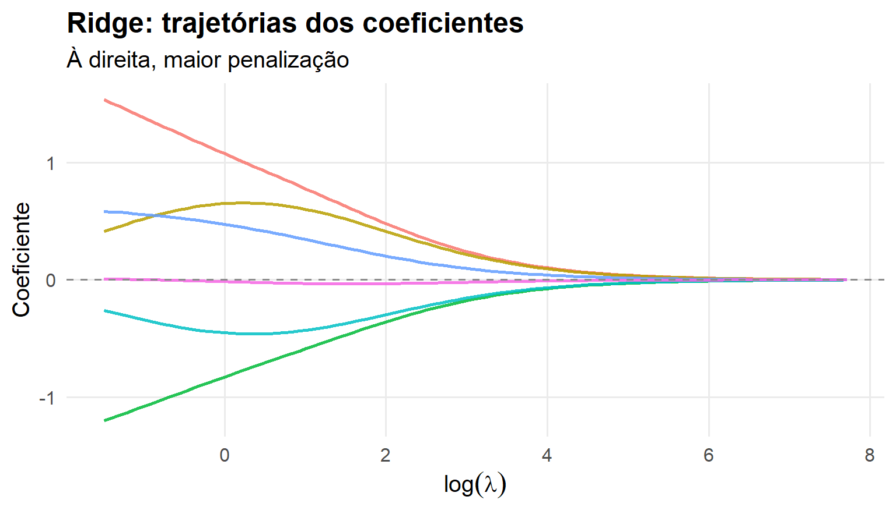
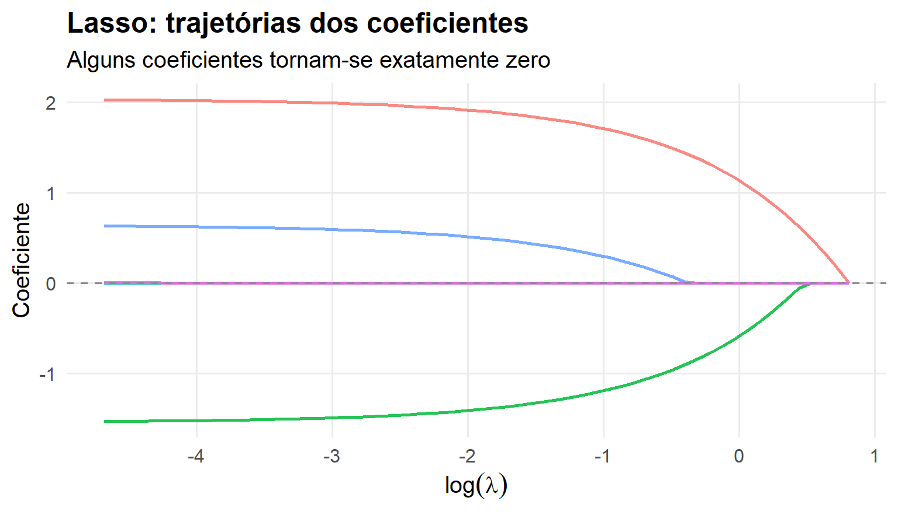
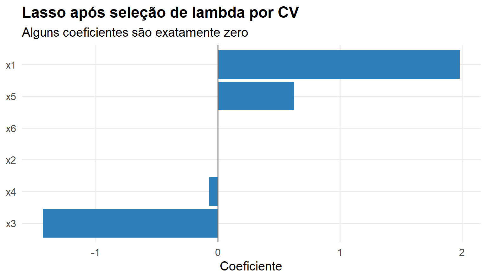

Parte I : Aprendizado Supervisionado
Seleção de Variáveis e Regularização
De onde partimos?
Até agora, aumentamos a flexibilidade para representar relações mais complexas. Com muitas covariáveis surgem duas perguntas:
\[\boxed{\text{Quais variáveis devem entrar no modelo?}}\]
\[\boxed{\text{Devemos permitir coeficientes de qualquer magnitude?}}\]
Duas estratégias
Seleção de variáveis
Escolher um subconjunto de covariáveis. \[X_1,\ldots,X_p\longrightarrow X_{j_1},\ldots,X_{j_k}\]
Regularização
Restringir os coeficientes. \[RSS\longrightarrow RSS+\lambda P(\beta)\]
Seleção de variáveis
O modelo completo é sempre melhor?
\[Y=\beta_0+\beta_1X_1+\cdots+\beta_pX_p+\varepsilon\]
Adicionar uma covariável nunca aumenta o RSS de treinamento. Portanto, \(RSS_{treino}\) sozinho não decide quantas variáveis manter.
Por que selecionar?
Um modelo menor pode ter menor variância, maior interpretabilidade e melhor desempenho fora da amostra. Retirar variáveis demais, porém, aumenta o viés.
\[\boxed{\text{Seleção também é um problema de viés × variância}}\]
Busca pelo melhor subconjunto
Para cada tamanho \(k\), avaliamos todos os modelos com exatamente \(k\) covariáveis.
\[\binom pk\]
No total existem \(2^p\) subconjuntos possíveis.
O crescimento é rápido
Best Subset: algoritmo conceitual
Para \(k=0,1,\ldots,p\):
- ajustar todos os modelos com \(k\) covariáveis;
- identificar o melhor daquele tamanho;
- comparar os vencedores entre os diferentes \(k\).
A busca exaustiva produz um candidato ótimo para cada tamanho, mas pode ser computacionalmente cara.
Como escolher \(k\)?
O menor RSS de treinamento favoreceria sempre o maior modelo.
Podemos usar validação cruzada ou critérios penalizados como \(C_p\), AIC, BIC e \(R^2_{aj}\).
Na aula principal, priorizaremos:
\[\boxed{\text{validação cruzada}}\]
Seleção é diferente de estimação
Há duas perguntas:
\[\boxed{\text{Quais variáveis?}}\qquad\boxed{\text{Quais coeficientes?}}\]
No Best Subset, primeiro escolhemos a estrutura e depois estimamos os coeficientes por MQO.
Regressão Stepwise
Por que Stepwise?
Se \(2^p\) modelos são muitos, pesquisamos apenas uma pequena parte do espaço.
\[\boxed{\text{Stepwise = busca sequencial}}\]
É mais econômico, mas não garante o melhor subconjunto global.
Forward Stepwise
Começamos com o modelo sem covariáveis, \(\mathcal M_0\).
A cada etapa:
- testamos cada variável ainda ausente;
- escolhemos a melhor inclusão;
- repetimos.
\[\mathcal M_0\subset\mathcal M_1\subset\cdots\subset\mathcal M_p\]
Backward Stepwise
Começamos com o modelo completo, \(\mathcal M_p\).
A cada etapa removemos a variável cuja retirada produz o melhor modelo seguinte:
\[\mathcal M_p\supset\mathcal M_{p-1}\supset\cdots\]
Best Subset × Stepwise

Uma ressalva importante
Stepwise é uma heurística. Uma variável descartada ou não escolhida em uma etapa pode participar de uma combinação melhor posteriormente.
\[\boxed{\text{Eficiência computacional vem ao custo de uma busca incompleta}}\]
Da seleção à regularização
Uma estratégia diferente
Best Subset e Stepwise trabalham essencialmente com decisões discretas:
\[\beta_j=0\quad\text{ou}\quad\beta_j\neq0\]
Regularização controla continuamente a magnitude:
\[|\beta_j|\downarrow\]
Por que regularizar?
- muitas covariáveis;
- forte correlação entre preditores;
- \(p\) grande relativamente a \(n\);
- coeficientes instáveis;
- foco em predição.
Preditores correlacionados

Princípio da regularização
\[\boxed{\widehat{\boldsymbol\beta}=\arg\min_{\boldsymbol\beta}\{RSS(\boldsymbol\beta)+\lambda P(\boldsymbol\beta)\}}\]
Equilibramos ajuste aos dados e complexidade.
Uma formulação geral
Perda + penalização
\[ \boxed{\widehat\beta=\arg\min_\beta\{\mathcal L(\beta)+\lambda P(\beta)\}} \] A função de perda muda entre regressão e classificação; a lógica de regularização permanece
Ridge e Lasso
Regressão Ridge
\[\boxed{\widehat{\boldsymbol\beta}^{R}=\arg\min_{\boldsymbol\beta}\left[RSS+\lambda\sum_{j=1}^{p}\beta_j^2\right]}\]
O intercepto normalmente não é penalizado.
O papel de \(\lambda\)
\[\lambda=0\Rightarrow\text{MQO}\] \[\lambda\uparrow\Rightarrow\text{maior shrinkage}\] \[\lambda\to\infty\Rightarrow\beta_j\to0\]
\[\boxed{\lambda=\text{hiperparâmetro de regularização}}\]
Trajetórias Ridge

O que Ridge faz?
\[|\widehat\beta_j^R|\downarrow\]
mas, em geral,
\[\widehat\beta_j^R\neq0\]
Ridge encolhe coeficientes, mas não produz seleção esparsa.
Viés em troca de variância
\[\boxed{Bias^2\uparrow\quad+\quad Var\downarrow\quad\Rightarrow\quad R_{teste}\text{ pode diminuir}}\]
Ridge também é conhecido como Penalização \(L_2\)
Regressão Lasso
\[\boxed{\widehat{\boldsymbol\beta}^{L}=\arg\min_{\boldsymbol\beta}\left[RSS+\lambda\sum_{j=1}^{p}|\beta_j|\right]}\]
Lasso pode selecionar variáveis
Para valores adequados de \(\lambda\),
\[\widehat\beta_j^L=0\]
para algumas covariáveis.
\[\boxed{\text{Lasso = shrinkage + seleção de variáveis}}\]
Lasso também é conhecido como Penalização \(L_1\)
Trajetórias Lasso

Quatro filosofias
| Método | Estratégia |
|---|---|
| Best Subset | escolher diretamente um subconjunto |
| Stepwise | procurar sequencialmente um subconjunto |
| Ridge | encolher todos os coeficientes |
| Lasso | encolher e potencialmente zerar coeficientes |
Por que padronizar?
\[x_j^*=\frac{x_j-\bar x_j}{s_j}\]
A penalização atua sobre os coeficientes; escalas muito diferentes tornam a comparação inadequada.
A transformação deve ser estimada no treinamento, nunca usando o teste.
Escolhendo a complexidade
O mesmo problema em quatro métodos
Best Subset / Stepwise: \[k=\text{tamanho do modelo}.\]
Ridge / Lasso: \[\lambda=\text{intensidade da penalização}.\]
\[\boxed{\text{A complexidade deve ser escolhida fora da amostra de ajuste}}\]
Validação cruzada
Para cada candidato:
- ajustar no treinamento do fold;
- predizer no fold de validação;
- calcular o erro;
- repetir;
- calcular o erro médio;
- selecionar a complexidade.
Curva de CV: Ridge

\(\lambda_{min}\) e \(\lambda_{1se}\)
\[\lambda_{min}=\arg\min_\lambda\widehat R_{CV}(\lambda)\]
A regra de um erro-padrão favorece uma solução mais regularizada cujo desempenho ainda é compatível com o mínimo.
Lasso selecionado por CV

Comparação final
Selecionar ou encolher?
Seleção discreta
Best Subset / Stepwise \[\beta_j=0\quad\text{ou}\quad\beta_j\neq0\] Modelos mais fáceis de descrever, mas a seleção pode ser instável.
Shrinkage
Ridge / Lasso \[|\beta_j|\downarrow\] Controle contínuo da complexidade; especialmente útil em alta dimensão.
Preditores correlacionados
- Ridge tende a distribuir o efeito entre variáveis correlacionadas;
- Lasso pode selecionar algumas e zerar outras;
- Stepwise também pode ser instável quando variáveis são muito semelhantes.
\[\boxed{\text{Correlação torna a seleção de variáveis menos estável}}\]
O teste continua intocado
\[\boxed{\mathcal D_{treino}}\rightarrow\boxed{\text{seleção/tuning por CV}}\rightarrow\boxed{\text{modelo final}}\rightarrow\boxed{\mathcal D_{teste}}\]
Síntese
Best Subset: busca exaustiva.
Stepwise: busca sequencial.
Ridge: \(P(\beta)=\sum_j\beta_j^2\)
Lasso: \(P(\beta)=\sum_j|\beta_j|\)
Quatro ideias para levar
- Mais variáveis não significam melhor generalização.
- Best Subset e Stepwise controlam complexidade por seleção.
- Ridge e Lasso controlam complexidade por shrinkage.
- Seleção/tuning deve usar validação, nunca o teste.